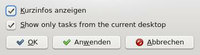

Plasma Hardy
Archivierte Anleitung
Dieser Artikel wurde archiviert, da er - oder Teile daraus - nur noch unter einer älteren Ubuntu-Version nutzbar ist. Diese Anleitung wird vom Wiki-Team weder auf Richtigkeit überprüft noch anderweitig gepflegt. Zusätzlich wurde der Artikel für weitere Änderungen gesperrt.
Hinweis:
Dieser Artikel beschreibt Plasma in der Version von KDE 4.0. Spätere Versionen von Plasma, insbesondere die ab Intrepid Ibex verwendete, weichen zum Teil stark von der hier beschriebenen Version ab.
Zum Verständnis dieses Artikels sind folgende Seiten hilfreich:
Plasma  ist der Desktop der KDE, der in KDE 4 eingeführt wurde. Plasma wurde neu entwickelt und beinhaltet einige neue Features und Konzepte wie z.B. die Zusammenführung von Desktop und Panel, neue Miniprogramme (auch bekannt als Applets oder Widgets), die sogenannten Plasmoide, etc. Plasma ersetzt somit kdesktop und kicker. Als K-Menü wird nun Kickoff verwendet, jedoch ist es möglich, ein traditionelles Menü in der Kontrollleiste zu verwenden. Weitere Menüs befinden sich bereits in der Implementierung.
ist der Desktop der KDE, der in KDE 4 eingeführt wurde. Plasma wurde neu entwickelt und beinhaltet einige neue Features und Konzepte wie z.B. die Zusammenführung von Desktop und Panel, neue Miniprogramme (auch bekannt als Applets oder Widgets), die sogenannten Plasmoide, etc. Plasma ersetzt somit kdesktop und kicker. Als K-Menü wird nun Kickoff verwendet, jedoch ist es möglich, ein traditionelles Menü in der Kontrollleiste zu verwenden. Weitere Menüs befinden sich bereits in der Implementierung.
Installation¶
Für Plasma muss das Paket kdebase-workspace installiert werden. Eine komplette Installation von KDE 4 ist hier beschrieben. Dies beinhaltet auch Plasma. Weitere Plasmoide sind im Paket extragear-plasma enthalten.
Benutzung¶
Plasma wird standardmäßig gestartet, wenn man eine KDE 4 Sitzung startet. Dies ist im Artikel zu KDE 4 beschrieben.
Plasmoide¶
Miniprogramme (oder Widgets, Applets) unter Plasma heißen "Plasmoide". Diese sind das zentrale Konzept von Plasma. Jedes Element, dass auf der Arbeitsfläche angezeigt wird, ist ein Plasmoid. Genau genommen ist sogar der Desktop selbst ein Plasmoid. Eine Übersicht dieser Widgets ist im Artikel Plasma/Miniprogramme zu finden.
Plasmoide können generell verschoben, skaliert und rotiert werden. Dafür besitzt jedes Plasmoid einige Kontrollelemente, die in einem Rahmen um das Plasmoid angezeigt werden, sobald man mit der Maus über das Plasmoid fährt. Dieser Rahmen wird jedoch nicht angezeigt, wenn die Miniprogramme gesperrt sind. Zum Verschieben muss einfach nur auf das Plasmoid mit der Maus geklickt werden. Es lässt sich ganz normal mittels Drag&Drop verschieben.
Aktuell gibt es nur ein paar Plasmoide, jedoch können auch bestehende Superkaramba Miniprogramme als Plasmoid eingefügt werden. Generell ist Plasma so flexibel, dass es theoretisch jede Widget-Architektur unterstützt. Ab KDE 4.1 werden z.B. MacOS X Dashboard Widgets unterstützt.
Grundsätzlich ist es auch möglich, eigene Plasmoide zu schreiben. Diese müssen nicht unbedingt mit Qt4 / C++ geschrieben werden; es ist auch möglich, Plasmoide in JavaScript, Python, Java oder Ruby zu schreiben. Oder wie bisher als Superkaramba Widget.
Plasmoide hinzufügen und entfernen¶
Plasmoide können über den "Miniprogramm hinzufügen" Dialog hinzugefügt werden. Diesen öffnet man über die Desktop-Toolbox oder über das Kontextmenü der Arbeitsfläche oder der Kontrollleiste. Um ein Plasmoid hinzuzufügen klickt man im Dialog auf das Plasmoid und zieht es mittels Drag&Drop auf die Stelle der Arbeitsfläche oder der Kontrollleiste an der das Plasmoid angezeigt werden soll. In Version KDE 4.0 ist es noch nicht möglich ein Plasmoid vom Desktop in die Kontrollleiste nachträglich zu verschieben. Dies wird erst mit KDE 4.1 unterstützt. Auch lassen sich die Plasmoide in der Kontrollleiste noch nicht verschieben oder neu anordnen.
Jedes Plasmoid enthält ein Kontextmenü, über das - sofern möglich - Einstellungen vorgenommen werden können und das Plasmoid wieder entfernt werden kann. Im "Miniprogramm hinzufügen" Dialog gibt es auch die Möglichkeit ein Plasmoid zu entfernen, dabei werden aber alle Plasmoide des selben Typs entfernt. Dies wird über ein rotes Minus-Icon angezeigt. Auch im Rahmen, der angezeigt wird, sobald man mit der Maus über ein Plasmoid fährt, wird ein Symbol angezeigt, um dieses wieder zu entfernen.
Dashboard¶
Dashboard  ist die von Mac OS X bekannte Möglichkeit alle Plasmoide in den Vordergrund zu holen. Somit ist es möglich sich auch die von Anwendungen verdeckten Plasmoide anzuzeigen, ohne alle Anwendungen minimieren zu müssen. Auch ermöglicht das Dashboard eine leichtere Anordnung der Plasmoide und ein einfaches Hinzufügen neuer Elemente.
ist die von Mac OS X bekannte Möglichkeit alle Plasmoide in den Vordergrund zu holen. Somit ist es möglich sich auch die von Anwendungen verdeckten Plasmoide anzuzeigen, ohne alle Anwendungen minimieren zu müssen. Auch ermöglicht das Dashboard eine leichtere Anordnung der Plasmoide und ein einfaches Hinzufügen neuer Elemente.
Das Dashboard kann mit dem Shortcut Strg + F12 angezeigt werden. Den Dashboard-Mode verlässt man entweder über den gleichen Shortcut oder mit Esc . Zusätzlich wird in der Desktop-Toolbox ein Button "Dashboard ausblenden" angezeigt.
Sind die Arbeitsflächeneffekte aktiviert, so werden im Dashboard-Modus alle Anwendungen und die Arbeitsfläche abgedunkelt. Sind die Effekte nicht aktiviert, so wird nur die Arbeitsfläche angezeigt, jedoch nicht die geöffneten Anwendungen.
Arbeitsfläche¶
 Wie bereits oben erwähnt, ist die Arbeitsfläche in Wahrheit auch nur ein Plasmoid und gleichzeitig ein so genanntes Containment, das weiter Plasmoide aufnehmen kann. Einige Funktionen lassen sich per Kontextmenü auf der Arbeitsfläche erreichen. Dies sind:
Wie bereits oben erwähnt, ist die Arbeitsfläche in Wahrheit auch nur ein Plasmoid und gleichzeitig ein so genanntes Containment, das weiter Plasmoide aufnehmen kann. Einige Funktionen lassen sich per Kontextmenü auf der Arbeitsfläche erreichen. Dies sind:
"Befehl ausführen..." - Ausführen eines Befehls, startet krunner
"Miniprogramme hinzufügen..." - Hinzufügen oder Entfernen eines Plasmoids
"Arbeitsfläche einrichten..." - Konfiguration der Arbeitsfläche
"Waagrecht ausrichten" - Ordnet Dateien auf dem Desktop horizontal
"Senkrecht ausrichten" - Ordnet Dateien auf dem Desktop vertikal
"Miniprogramme sperren" - Sperrt die Position aller Plasmoide, verhindert hinzufügen weiterer Plasmoide. Aufheben der Sperre durch "Miniprogramme entsperren"
"Arbeitsfläche sperren" - sperrt den Bildschirm
"Abmelden" - Abmelden, Rechner herunterfahren etc.
 Über den Menüpunkt "Arbeitsfläche einrichten" des Kontextmenüs der Arbeitsfläche öffnet sich ein Konfigurationsdialog. Hier lässt sich das Hintergrundbild oder eine Diashow einstellen. Zusätzlich lässt sich über den Button "Neues Hintergrundbild..." weitere Hintergrundbilder von KDE-LOOK.ORG herunterladen.
Über den Menüpunkt "Arbeitsfläche einrichten" des Kontextmenüs der Arbeitsfläche öffnet sich ein Konfigurationsdialog. Hier lässt sich das Hintergrundbild oder eine Diashow einstellen. Zusätzlich lässt sich über den Button "Neues Hintergrundbild..." weitere Hintergrundbilder von KDE-LOOK.ORG herunterladen.
Der Punkt "Symbole anzeigen" bestimmt, ob Plasma auf der Arbeitsfläche die Dateien im Ordner ~/Desktop anzeigen soll. Hier ist jedoch zu beachten, dass Plasma noch kein Dateimanagement beherrscht. Die angezeigten Dateien sind nur Plasmoide, die eine Datei repräsentieren. Das Löschen einer solchen Datei führt nicht zum Löschen der Datei. Auch können die Dateien so nicht von der Arbeitsfläche mittels Drag&Drop in einen anderen Ordner verschoben werden. Dateimanagement in der Arbeitsfläche soll voraussichtlich mit KDE 4.1 unterstützt werden.
Desktop-Toolbox¶
In der rechten oberen Ecke des Desktops befindet sich eine Schaltfläche, die Desktop-Toolbox, welche die Möglichkeit bietet, den "Miniprogramm hinzufügen" Dialog zu starten. Ab KDE 4.1 wird die Toolbox mehr Möglichkeiten bieten und eine wichtigere Rolle in Plasma einnehmen.
Befindet man sich im Dashboard-Modus so wird eine Schaltfläche in der Toolbox angezeigt, um diesen wieder zu beenden.
Kontrollleiste¶
Plasma zeigt im unteren Bereich der Arbeitsfläche eine Kontrollleiste mit:
K-Menü
Fensterleiste
Arbeitsflächen-Umschalter
Systemabschnitt der Kontrollleiste
Geräteüberwachung
Uhr
Die Kontrollleiste ist, wie der Desktop, ein sogenanntes Containment für Plasmoide. Dies bedeutet, die Kontrollleiste selbst ist auch nur ein Plasmoid und sie kann andere Plasmoide aufnehmen. Jedes der genannten Elemente, ist also ein Plasmoid und weitere Elemente können somit hinzugefügt oder entfernt werden.
Seit KDE 4.0.2 ist es möglich Größe und Position der Kontrollleiste festzulegen. Dazu öffnet man das Kontextmenü der Kontrollleiste und wählte den Punkt "Kontrollleiste einrichten...". Es öffnet sich ein Dialog in dem man die Größe der Kontrollleiste aus einigen vordefinierten Werten auswählen kann, bzw. eine eigene Angabe machen kann. Zusätzlich ist es möglich die Position der Kontrollleiste zu ändern, dabei kann man zwischen allen Ecken des Bildschirms wählen.
 Über das Kontextmenü der Fensterleiste, kann diese ebenfalls konfiguriert werden. Dazu wählt man den Menüpunkt "Fensterleiste einrichten...". Es öffnet sich ein Dialog, in dem man einstellen kann, ob Kurzinfos angezeigt werden, wenn man mit der Maus über einen Eintrag in der Fensterleiste fährt. Zusätzlich kann man wählen, ob die Fenster aller Arbeitsflächen angezeigt werden, oder nur die der aktuellen Arbeitsfläche.
Die Funktionen für die Programme, welche im Systemabschnitt der Kontrollleiste liegen sind wie gewohnt per Links- und/oder Rechtsklick auf das entsprechende Icon zu erreichen.
Programme starten¶
K-Menü¶
Links unten in der Kontrollleiste befindet sich der K-Button, über den sich das K-Menü starten lässt. Wie oben erwähnt, wird nun standardmäßig Kickoff verwendet. Ein traditionelles Menü kann jedoch als Plasmoid der Kontrollleiste hinzugefügt werden. Kickoff wurde speziell unter dem Gesichtspunkt der Benutzbarkeit entwickelt. Kickoff gruppiert die Einträge nach "Favoriten", "Programme", "Rechner", "Kürzliche verwendete" und "Verlassen".
"Favoriten" listet die am häufigsten Benutzten Programme
"Programme" listet alle Programme in den gewohnten Programmgruppen. Ein Klick einer Programmgruppe öffnet jedoch nicht ein Untermenü, sondern ersetzt das zuvor angezeigte Menü.
"Rechner" enthält einige wichtige Einträge zu Verzeichnissen und den KDE Systemeinstellungen
"Kürzliche verwendete" listet die zuletzt verwendeten Programme und Dateien
"Verlassen" enthält die Punkte zum Abmelden oder Herunterfahren des Computers.
Über das Kontextmenü eines Eintrags in Kickoff ist es möglich diesen Eintrag der Arbeitsfläche oder der Kontrollleiste hinzuzufügen. Außerdem kann man darüber einen Eintrag zu den Favoriten hinzufügen bzw. von dort entfernen.
Krunner¶
Krunner erreicht man entweder über den Shortcut Alt + F2 oder über das Kontextmenü des Desktops und den Punkt "Befehl ausführen...".
Im Dialogfenster kann man den Namen eines Programms eintippen oder über ein Dropdown bereits zuvor eingegebene Programme auswählen. Sobald ein Programmname erkannt wird erscheint im Fenster unter der Eingabezeile der volle Pfad zum Programm und die Schaltfläche "Einstellungen anzeigen" wird aktiviert. Hier hat man z.B. die Möglichkeit, das Programm in einem Terminal laufen zu lassen, das Programm als als ein anderer Benutzer laufen zu lassen oder die Prozesspriorität festzulegen. Ein Klick auf "Starten" bzw. ⏎ startet das gewählte Programm.
Gibt man einen unvollständigen Begriff ein bzw. der Programmname wird nicht erkannt, so startet automatisch die KDE Desktopsuche Strigi.
Wird als erstes Zeichen ein = eingegeben, so wird ein kleiner Mini-Rechner gestartet. Dieser eignet sich jedoch nur für sehr einfache Rechenaufgaben, so werden Dezimalstellen nicht unterstützt.
Über den Button "Systemüberwachung anzeigen" ist es möglich die Systemüberwachung zu starten und sich alle laufenden Prozesse anzuzeigen.
Tipps und Tricks¶
Ursprüngliche Konfiguration wiederherstellen¶
Sollte man aus Versehen zum Beispiel wichtige Elemente aus der Kontrollleiste gelöscht haben oder man hat mittels der Desktop-Toolbox soweit aus der Arbeitsfläche herausgezoomt, dass man nicht mehr zurück zoomen kann, so kann man durch das Löschen der Dateien ~/.kde4/share/config/plasmarc und ~/.kde4/share/config/plasma-appletsrc die ursprüngliche Konfiguration und Anordnung von Plasmoiden wiederherstellen. Nun muss man nur noch Plasma neustarten. Das geht am einfachsten durch Alt + F2 und dann Eingabe von:
killall plasma && plasma
Weitere Kontrollleiste hinzufügen¶
Aktuell ist es noch nicht möglich über die grafische Konfiguration eine weitere Kontrollleiste der Arbeitsfläche hinzuzufügen. Dies wird jedoch prinzipiell von Plasma über die Konfigurationsdatei unterstützt. Dazu öffnet man die Datei ~/.kde4/share/config/plasma-appletsrc in einem Editor [1]. In der Datei findet man einen Abschnitt, der die bestehende Kontrollleiste beschreibt. Diese sieht in etwa so aus:
[Containments][2] formfactor=2 geometry=0,976,1280,48 location=4 locked=false plugin=panel screen=0 size=40 transform=1,0,0,0,1,0,0,-1030,1
Um eine neue Kontrollleiste zu erstellen muss der gefundene Abschnitt kopiert werden und einige Werte geändert werden.
[Containments][2]
Hier muss der Wert auf den nächsten freien Wert erhöht werden. In der Regel sollte dies die 3 sein.
formfactor=2
Hier bedeutet die 2 eine horizontale Ausrichtung. Falls man eine vertikale Kontrollleiste einrichten will, muss man eine 3 eintragen.
location=4
Dieser Eintrag bestimmt wo die Kontrollleiste angezeigt wird. Es gibt die folgenden Werte:
3: oben
4: unten
5: links
6: rechts
Ein Minimaleintrag für eine weitere Kontrollleiste, die oben angezeigt werden soll, sieht wie folgt aus:
[Containments][3] formfactor=2 location=3 locked=false plugin=panel screen=0
Die restlichen Einträge, die oben aufgeführt sind, werden nicht unbedingt benötigt. Diese werden von Plasma automatisch gesetzt, sobald die Kontrollleiste konfiguriert wird.
Nach dem die Konfigurationsdatei editiert wurde, muss nun Plasma neugestartet werden. Dazu einfach die aktuelle Sitzung beenden und neu anmelden.
Anderes K-Menü einstellen¶
Das neue K-Menü Kickoff kann auch durch ein traditionelles Menü oder ab KDE 4.1 durch Lancelot ersetzt werden. Der Releasetermin von Raptor ist dagegen noch ungewiss. Dazu öffnet man den Miniprogramm hinzufügen Dialog und zieht den Eintrag "K-Menü (traditionell)" mittels Drag&Drop links neben den existierenden K-Menü Button von Kickoff in der Kontrollleiste. Nun kann man über den selben Dialog Kickoff wieder entfernen. Dazu klickt man auf das rote Minus neben "K-Menü".
Alternativ kann durch einen Rechtsklick auf das Symbol des Startmenüs mittels des Punktes "zum klassischen Menüstil wechseln" auf das traditionelle K-Menü umgeschaltet werden.
- Erstellt mit Inyoka
-
 2004 – 2017 ubuntuusers.de • Einige Rechte vorbehalten
2004 – 2017 ubuntuusers.de • Einige Rechte vorbehalten
Lizenz • Kontakt • Datenschutz • Impressum • Serverstatus -
Serverhousing gespendet von